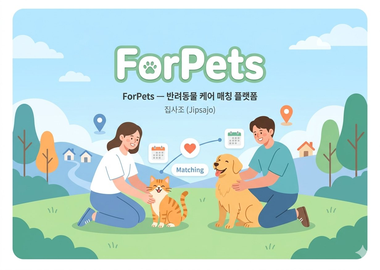
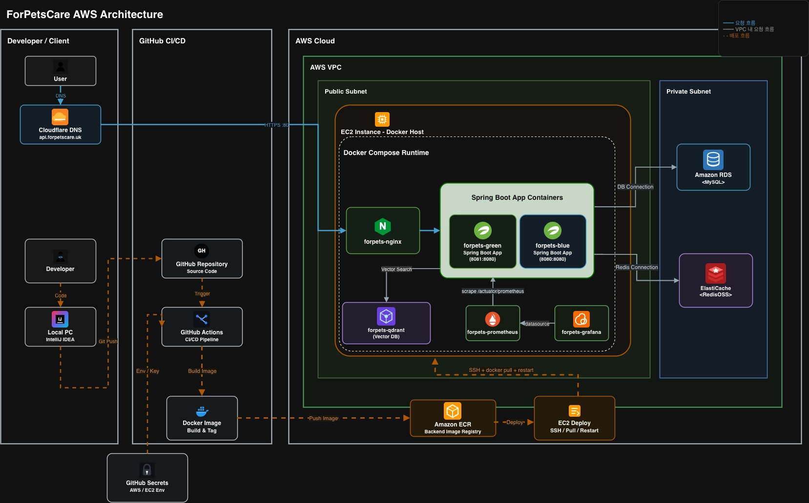
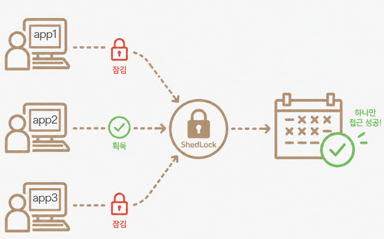

confirm / cancel / webhook이 동시 진입 시 Payment 상태가 중복 갱신.
← Back to Projects
01 · Backend Portfolio
ForPets
보호자와 시터를 양방향으로 매칭하는 반려동물 돌봄 플랫폼. 분산 락 기반 동시성 제어와 멀티 인스턴스 안정성이 핵심 과제.

| 기간 | 6주 · 2026.04 — 2026.06 |
|---|---|
| 팀 | 백엔드 6명 |
| 역할 |
|
| Links | GitHub · 배포 사이트 ↗ |
01 · 서비스 소개
단방향이 아닌,
단방향이 아닌,
양방향 매칭 플로우.
일반 매칭 서비스와 달리 보호자 → 시터(정방향)와 시터 → 보호자(역방향) 두 흐름을 모두 지원. 두 플로우가 같은 시간 슬롯(TimeSlot)을 두고 경쟁하기 때문에 동시성 제어가 핵심 과제였습니다.
| 정방향 매칭 | CareRequest — 보호자가 특정 시터에게 직접 돌봄 요청 |
|---|---|
| 역방향 매칭 | Proposal — 시터가 보호자의 게시글(Post)에 먼저 제안 |
| 공통 자원 | TimeSlot — 두 플로우가 경쟁하는 시간 슬롯 |
| 확정 결과 | Reservation — 매칭 확정 후 생성되는 예약 |
기술 스택
LanguageJava 21
FrameworkSpring Boot 3.5
ORM / QuerySpring Data JPA · QueryDSL 5.1
DatabaseMySQL 8
Cache / LockRedis · Redisson 3.27 · ShedLock 5.16
PaymentPortOne (KG이니시스)
MonitoringPrometheus · Grafana · Micrometer
TestJUnit 5 · Mockito · k6
InfraDocker · AWS EC2 × 2 · ALB
02 · 시스템 아키텍처
EC2 × 2 · ALB 기반
ForPetsCare AWS Architecture — Blue/Green 배포, VPC 내 RDS·ElastiCache 분리
EC2 × 2 · ALB 기반
Blue/Green 배포 구조.

EC2 두 대를 ALB로 묶은 멀티 인스턴스 구성. 단일 인스턴스 락(synchronized, ReentrantLock)으로는
동시성 제어가 불가능하고 스케줄러도 양쪽 인스턴스에서 동시에 실행될 위험이 있어,
Redisson 분산 락 + ShedLock 도입이 백엔드 설계의 출발점이었습니다.
03 · 담당 도메인
양방향 매칭 도메인 설계.
| Post | 보호자가 올리는 돌봄 요청 게시글 |
|---|---|
| CareRequest | 보호자가 특정 시터에게 직접 돌봄을 요청 (정방향) |
| Proposal | 시터가 보호자의 게시글에 돌봄을 제안 (역방향) |
| Reservation | 매칭 확정 후 생성되는 예약 |
| PetSnapshot · TimeSlotInfo | 매칭 시점에 @Embeddable로 박제 — 원본이 바뀌어도 과거 예약 정합성 유지 |
| HasTimeSlotInfo | Post · CareRequest · Reservation이 공통으로 가진 시간 슬롯을 다형적으로 충돌 검사 |
| ID-only 참조 | @SQLRestriction 기반 soft delete + ID-only 참조로 결합도 최소화 |
| 관측 (@TrackExecutionTime) | 커스텀 AOP로 락·트랜잭션·API 응답 시간을 Prometheus 지표로 노출 |
04.1 · 기술적 도전
Race Condition —
Race Condition —
Lock과 Transaction의 순서 문제.
문제
동일 Reservation에
원인
Lock이 Transaction 안쪽에 걸려 수명이 역전 → 커밋 전에 락이 해제되면서 짧은 구간에 다른 스레드가 같은 데이터에 접근 가능. 락의 의미가 사실상 사라짐.
해결
- Lock이 Transaction을 감싸도록 구조 리팩토링 (
@Order(HIGHEST_PRECEDENCE)로@Transactional보다 바깥 보장) @DistributedLockAOP + Redisson 추상화, SpEL 동적 키 적용- webhook처럼 파라미터에 reservationId가 없는 케이스는
LockService(Supplier)로 선조회 후 락 - 락 통과 후 stale read/write 방어를 위해 Payment · ReservationPayment에
@Version낙관락 추가
결과
예약 확정·취소·결제 콜백 동시 발생 시 상태 중복 처리를 구조적으로 차단. 회귀 방지 통합 테스트 확보.
설계 결정
분산 락은 트랜잭션 바깥에 두는 것이 원칙. AOP Order를 명시적으로 지정하지 않으면
@Transactional보다 안쪽에 걸릴 수 있다는 걸 체감했습니다. SpEL 동적 키를 AOP 체인 중간에 바인딩하는 과정에서는 Reflection으로 파라미터를 재추출해야 했습니다.
04.2 · 기술적 도전
PG 부분환불 미지원
PG 부분환불 미지원
→ Settlement 구조 분리로 우회.
문제
예약 취소 시 위약금을 제외한 금액만 환불해야 하는데, PortOne(KG이니시스) 부분환불 API 호출이 실패 (
pgCode=500503).
원인
PortOne(KG이니시스)가 부분환불을 지원하지 않음 → PG 레벨에서는 해결 불가로 판단.
해결
- PG 호출로 푸는 방향을 포기, 정산(Settlement) 구조 변경으로 우회하기로 결정
- 위약금을 제외한 금액을 별도 Settlement로 생성
SettlementTypeenum 확장 → 부분환불 시 정산 2건(환불분 / 정산분)으로 분리PaymentErrorCode신설로 외부 PG 실패 분기를 표준화
결과
부분환불 시나리오 실패 케이스 0건.
설계 결정
외부 시스템 한계를 마주쳤을 때 PG를 바꾸는 대신 도메인 모델로 우회. 결제 이력과 정산 이력을 분리해두었기에 가능했던 선택.
04.3 · 기술적 도전
멀티 인스턴스 스케줄러
ShedLock — 여러 인스턴스가 동시에 잡을 시도해도 락을 획득한 하나만 실행
멀티 인스턴스 스케줄러
중복 실행 방지 — ShedLock.

문제
EC2 두 대에서 동일 스케줄러가 양쪽에서 실행되면서 같은 레코드를 두 번 처리.
해결
기존 스케줄러에
@SchedulerLock 부착만으로 다중 인스턴스 단일 실행 보장. Quartz 클러스터링 대신 ShedLock(Redis provider)을 선택한 이유는 기존 코드 변경 최소화. 스케줄러(잡 단위) + Redis SETNX(엔티티 단위) 두 층으로 락을 걸었습니다.
적용 스케줄러
- Post / CareRequest 만료 처리
UNAVOIDABLE사유 취소 자동 승인- Reservation 만료 처리
설계 결정
배치 시스템 도입 없이 기존
@Scheduled 위에 어노테이션 하나로 확장. "코드 최소 변경"이 우선 순위였고 ShedLock이 그 조건에 맞았습니다.
05 · 회고
기술 선택은
기술 선택은
데이터로 남긴다.
네 가지 락 전략을 직접 만들고 비교해보고 나서야 "동시성 제어는 결국 자원 보호의 문제"라는 말이 와닿았습니다. 다음 프로젝트에서도 기술을 도입할 때 이런 비교 데이터를 먼저 남기려 합니다.